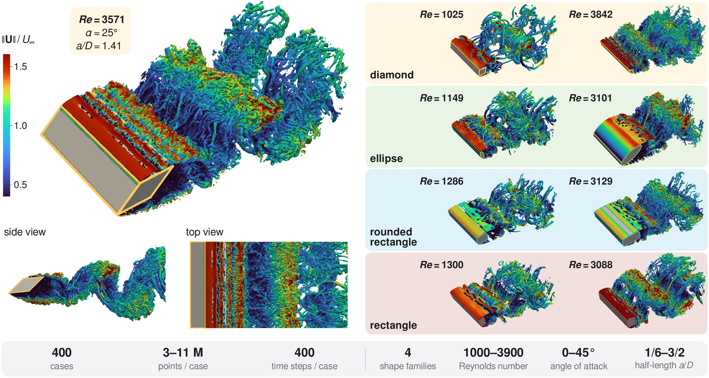
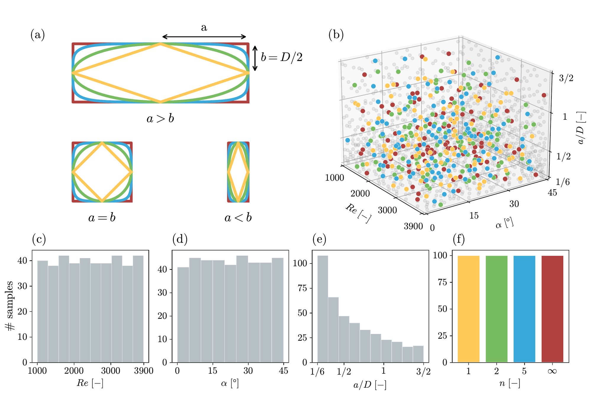
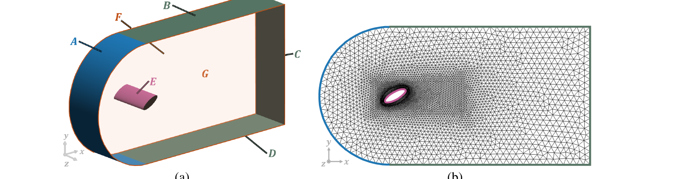
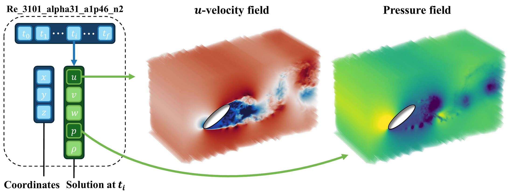
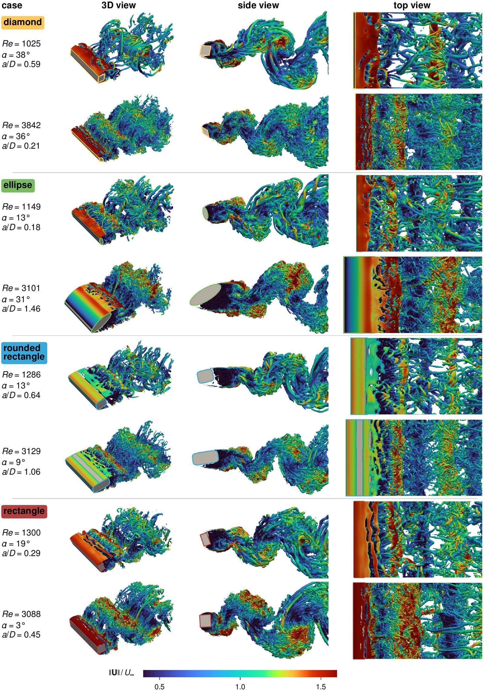
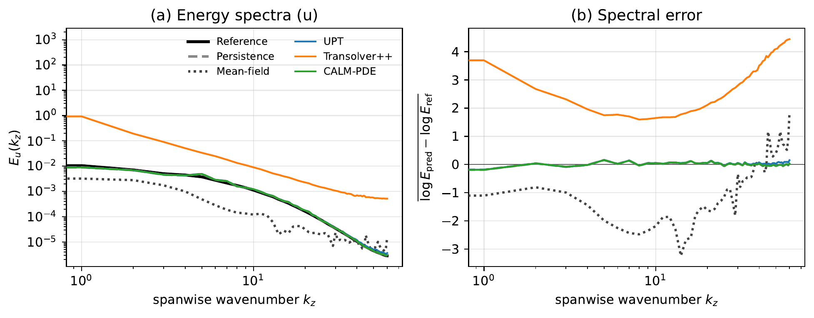
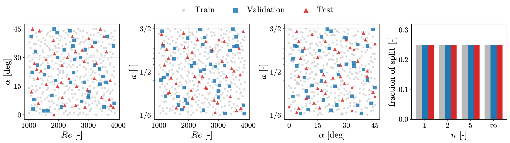

1 of 4
stays stable
Over 400 steps, only CALM-PDE keeps its error below the mean-field level. The others drift to 5–33× that level.
NeurIPS 2026 · Track on Evaluations and Datasets
A Large-Scale Benchmark for Turbulent 3D Neural PDE Surrogates
1Sorbonne Université, CNRS, ISIR 2TU Delft, Faculty of Aerospace Engineering 3Sorbonne Université, CNRS, Institut Jean Le Rond d’Alembert 4Criteo AI Lab
Overview
Machine-learning surrogates are increasingly used to accelerate computational fluid dynamics, yet progress is limited by the lack of benchmarks capturing realistic, time-dependent turbulent flows. We introduce TurtLES, a 14 TB dataset of 3D turbulent cylinder wakes in the shear-layer transition regime, computed via high-fidelity implicit large-eddy simulations. The dataset contains 400 trajectories of 400 time steps each, with 3–11 million points per frame, spanning variations in geometry, Reynolds number, and angle of attack. Unlike existing datasets, TurtLES combines (i) physically realistic turbulence with an active energy cascade driven by vortex stretching, (ii) dense irregular meshes, and (iii) long-horizon temporal dynamics. We benchmark state-of-the-art neural operators on autoregressive rollouts and identify key failure modes, including temporal instability, loss of small-scale energy, and challenges in learning on large irregular domains. TurtLES provides a new benchmark for evaluating surrogate models on 3D turbulent wakes at industrially relevant mesh resolution.
Mid-span slices of the same simulation as the 3D view above. The dataset stores the full 3D fields; slices are for visualisation only.
Many “dynamic fluid” benchmarks are unsteady or chaotic without containing 3D turbulence, where vortex stretching drives energy from large eddies down to small ones. Others reach 3D and industrial scale but only at steady state, or stay on coarse point clouds. TurtLES covers all of these axes at once.
| Dataset | 3D | Time-dependent | Irregular mesh | Geometry variation | Resolved 3D turbulence | Resolution per frame |
|---|---|---|---|---|---|---|
| The Well | Partly | Yes | No | No | Idealised only | ≤ 128³ grid |
| DrivAerNet | Yes | Steady state | Yes | Yes | Modelled (RANS) | tens of millions of DoF |
| EAGLE | 2D | Yes | Yes | Yes | No | ~10³ points |
| TurtLES | Yes | 400 steps | Yes | Yes | Yes (iLES) | 3–11 M points |
Summary of the related-work comparison in the paper (Section 1–2).
Dataset
Each case places a super-elliptic cylinder in a uniform inflow. Four parameters define it: the shape family n, the half-length a, the Reynolds number Re, and the angle of attack α. Across this range the wake transitions to turbulence while the boundary layer stays laminar, so every trajectory contains an active 3D energy cascade.

A Sobol’ sequence draws the 400 samples so that they cover the parameter space evenly, without clusters or gaps.

Each case is solved with a high-order Flux Reconstruction implicit LES scheme implemented in PyFR, at Mach 0.2 and Prandtl 0.71. The mesh is generated automatically with Gmsh: a 2D xy-plane with structured near-wall layers and an unstructured wake region, extruded into 30 structured span-wise layers over a span of 2πD. Each element holds 75–125 solution points, giving 2.9 M to 10.5 M unique points per case in the stored region.

The setup is validated against DNS and experimental data for four benchmark cases: a circular cylinder at Re = 1000 and 3900, a square cylinder at Re = 2000, and a 5:1 rectangle at Re = 3000. Strouhal number, drag, recirculation length, wake profiles and velocity spectra agree well with the literature; full comparisons and a mesh-convergence study are in the paper’s appendix.
Each case stores one set of node coordinates and 400 snapshots of five fields: pressure p, density ρ, and velocity u, v, w. Snapshots start once the initial numerical transient has washed out, and cover the box x/D ∈ [−3, 10], y/D ∈ [−3.5, 3.5], z/D ∈ [0, 2π].

Re_3101_alpha31_a1p46_n2.
At low Re the wake is made of fewer, thicker and more coherent vortex tubes. At high Re it breaks up into a much denser field of fine-scale structures.

Mid-span slices of streamwise velocity and pressure, one case per tab.
Benchmark
We train four neural operators, UPT, GINO, Transolver++ and CALM-PDE, to predict the next frame of all five fields, then roll each one out autoregressively for 399 steps from the first frame alone. All four share the same training budget: 320 training trajectories, 100k steps, about 20 hours on one H100.
1 of 4
Over 400 steps, only CALM-PDE keeps its error below the mean-field level. The others drift to 5–33× that level.
2 of 4
Even on the first frame, GINO and Transolver++ do no better than predicting each frame’s spatial average.
Small scales
Energy spectra show UPT losing fine-scale fidelity and Transolver++ adding spurious small-scale energy.
≤ 16×
At millions of points per frame, the speedup over the solver is modest, from about 3× to 16×.
VRMSE per rollout window, log scale. Above 1 means worse than predicting the spatial mean.
GPU-seconds to generate (solver) or predict (surrogate) one full trajectory on H100.

| Model | Field error | Spectral error | |||
|---|---|---|---|---|---|
| Rel-L2 | VRMSE | Low | Mid | High | |
| UPT | 0.0701 | 0.0894 | 0.0469 | 0.0233 | 0.0442 |
| GINO | 0.132 | 1.21 | 0.132 | 0.0731 | 0.0448 |
| Transolver++ | 0.108 | 1.06 | 0.0802 | 0.0289 | 0.441 |
| CALM-PDE | 0.0680 | 0.0726 | 0.0466 | 0.0238 | 0.0444 |
| Model | Rollout VRMSE | GPU-s | |||
|---|---|---|---|---|---|
| 1–50 | 51–150 | 151–300 | 301–399 | ||
| Solver (PyFR) | – | – | – | – | 13,160 |
| UPT | 0.651 | 1.56 | 3.31 | 5.12 | 835 |
| GINO | 3.18 | 10.32 | 24.31 | 33.12 | 4,097 |
| Transolver++ | 2.33 | 8.32 | 19.33 | 31.24 | 1,148 |
| CALM-PDE | 0.461 | 0.546 | 0.652 | 0.789 | 1,073 |
Get the data
Trajectories come pre-split into 320 training, 40 validation and 40 test cases. Every shape family is split exactly 80/10/10, and the assignment is optimised so that each subset covers the same range of Re, α and a as the full dataset. A circular-cylinder reference case (Re = 1000, α = 0°) is distributed separately.

The full dataset is 14 TB. mini-TurtLES defines fixed, named subsets so results from different labs stay comparable: drop shape families, keep fewer snapshots, or both.
G4-T400
≈ 14 TB
400 trajectories × 400 snapshots
Need something tiny? TurtLES-debug (≈ 5 GB) holds the
first 100 snapshots of the reference circular-cylinder case, for installation
checks and dataloader tests. All subsets are described in
miniturtles.md on the
Hugging Face dataset page.
# A ready-to-use Python download script will be published here.
# In the meantime, the dataset is available on Hugging Face:
# https://huggingface.co/datasets/turtlesprojectml/turtlesScope
Cite
@inproceedings{platenburg2026turtles,
title = {{TurtLES}: A Large-Scale Benchmark for Turbulent {3D} Neural {PDE} Surrogates},
author = {Platenburg, Jarno and Kassa{\"\i} Koupa{\"\i}, Armand and Cinnella, Paola and Gallinari, Patrick},
booktitle = {Advances in Neural Information Processing Systems (NeurIPS), Track on Evaluations and Datasets},
year = {2026}
}We acknowledge the financial support provided by DEEPNUM (ANR-21-CE23-0017-02), PHLUSIM (ANR-23-CE23-0025-02), MELISSA (ANR-24-CE23-7140-01), PEPR Sharp (ANR-23-PEIA0008, ANR, FRANCE 2030), and cluster IA PostGenAI@Paris (ANR-23-IACL-0007). This project was provided with computer and storage resources by GENCI at IDRIS thanks to the grants 2026-AD011016890R2, 2026-AD011017368, 2025-A0191016890 and 2026-A0211016890 on the supercomputer Jean Zay’s V100/A100/H100 partitions.